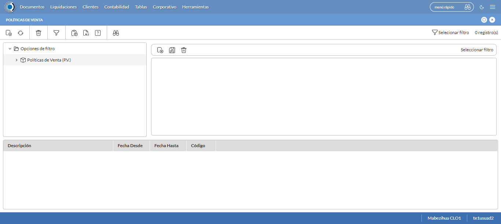
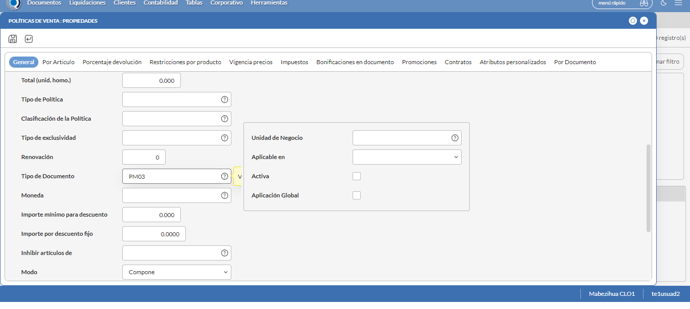
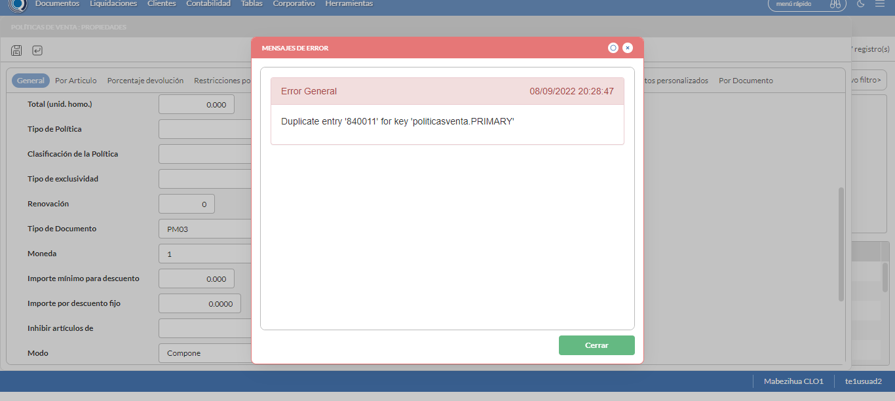
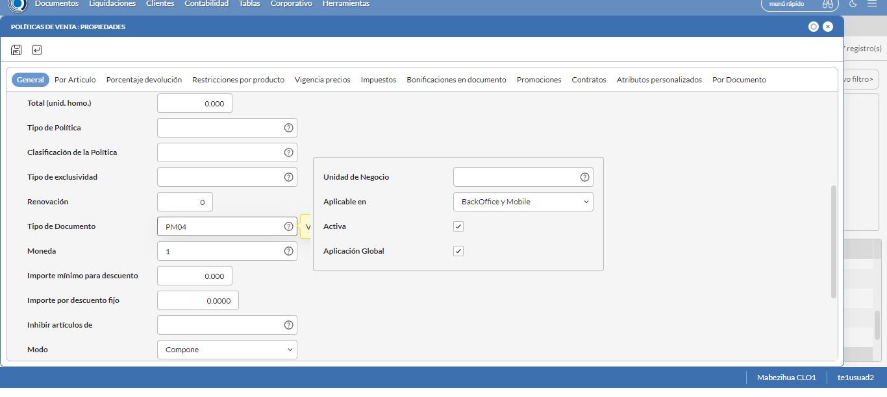
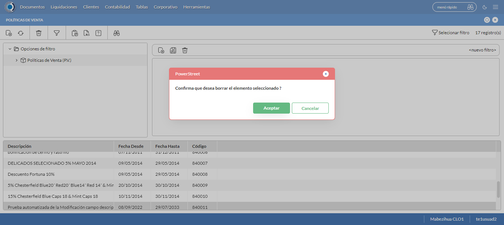

Desarrollado por : Area de Testing PWST
Fecha y hora de inicio : 2022-09-08 15:24:25
Duracion : 0:08:23.001633
Resultado : Total 8，Correctos 8 ，Taza de resultado 100.00%
Resumen 100.00% Errores 0 Fallidos 0 Correctos 8 Test realizados 8
| Caso de Prueba | Total | Correctos | Fallido | Error | Detalles | Captura del error |
| PoliticasVenta12.Test: Escenario 1 de Politica Mix Ideal con Restricción de Documento | 8 | 8 | 0 | 0 | Detalles | |
test |
pt1_1: 2022-09-08 15:24:26,445 - root - INFO - Se abre el chrome
2022-09-08 15:24:27,697 - root - INFO - Entra a la URL
2022-09-08 15:24:27,835 - root - INFO - Maximiza la pantalla
2022-09-08 15:24:30,894 - root - INFO - Cambia al frame
|
|
||||
test_000: Ingresa a la base de datos |
pt1_2: 2022-09-08 15:24:33,987 - root - INFO - Escribe el usuario
2022-09-08 15:24:34,087 - root - INFO - Escribe la contraseña
2022-09-08 15:24:34,227 - root - INFO - Se dio clic en el boton ingresar
2022-09-08 15:24:35,591 - root - INFO - Ejecutar Enterprise
2022-09-08 15:24:35,592 - root - INFO - Captura: C:\xampp\htdocs\versiones\automatizaciones\AutoPWST\12PV\report\img screen：20220908_15_24_35.png
2022-09-08 15:24:39,837 - root - INFO - Cambia entre pestañas
|

|
||||
test_001: Abre menu y ejecuta pantalla |
pt1_3: 2022-09-08 15:24:44,945 - root - INFO - Abre el menu completo
2022-09-08 15:24:59,949 - root - INFO - Abre la pantalla de Politicas de Venta
2022-09-08 15:25:00,058 - root - INFO - La pantalla ejecutada es Politicas de Venta
2022-09-08 15:25:03,063 - root - INFO - Captura: C:\xampp\htdocs\versiones\automatizaciones\AutoPWST\12PV\report\img screen：20220908_15_25_03.png
2022-09-08 15:25:03,291 - root - INFO - Se presiona el boton 'Nuevo', para crear un nuevo registro.
|
 | ||||
test_002: Abre la ventana de nuevo y crear un registro |
pt1_4: 2022-09-08 15:25:08,373 - root - INFO - Se abrio la pantalla para el ingreso de un registro nuevo.
2022-09-08 15:25:08,411 - root - INFO - El campo 'Codigo' si se encuentra visible.
2022-09-08 15:25:08,449 - root - INFO - El campo 'Codigo Alternativo' si se encuentra visible.
2022-09-08 15:25:08,488 - root - INFO - El campo 'Descrición' si se encuentra visible.
2022-09-08 15:25:08,527 - root - INFO - El campo 'Fecha Desde' si se encuentra visible.
2022-09-08 15:25:08,565 - root - INFO - El campo 'Fecha Hasta' si se encuentra visible.
2022-09-08 15:25:08,603 - root - INFO - El campo 'Tipo de Documento' si se encuentra visible.
2022-09-08 15:25:08,643 - root - INFO - El campo 'Moneda' si se encuentra visible.
2022-09-08 15:25:08,692 - root - INFO - El campo 'Aplicable en' si se encuentra visible.
2022-09-08 15:25:08,730 - root - INFO - El campo 'Activa' si se encuentra visible.
2022-09-08 15:25:08,767 - root - INFO - El campo 'Aplicación Global' si se encuentra visible.
2022-09-08 15:25:08,834 - root - INFO - Ingresa el codigo del nuevo registro
2022-09-08 15:25:11,964 - root - INFO - Ingresa el codigo alternativo del nuevo registro
2022-09-08 15:25:15,155 - root - INFO - Ingresa la descripción del nuevo registro
2022-09-08 15:25:23,667 - root - INFO - Se dió click en el botón Hoy para seleccionar la fecha Actual.
2022-09-08 15:25:26,871 - root - INFO - Ingresa la Fecha hasta del nuevo registro
2022-09-08 15:25:30,038 - root - INFO - Ingresa el tipo de documento del nuevo registro
2022-09-08 15:25:33,052 - root - INFO - Captura: C:\xampp\htdocs\versiones\automatizaciones\AutoPWST\12PV\report\img screen：20220908_15_25_33.png
2022-09-08 15:25:43,733 - root - INFO - Se dió doble click en el registro de Tipo Documento.
2022-09-08 15:25:54,198 - root - INFO - Se dió click en la opción BackOffice y Mobile.
2022-09-08 15:25:57,343 - root - INFO - Se dió click en el checkbox Activa.
2022-09-08 15:26:00,462 - root - INFO - Se dió click en el checkbox Aplicación Global.
2022-09-08 15:26:03,574 - root - INFO - Se hace el cambio a la pestaña Por Articulo para continuar con el registro nuevo
2022-09-08 15:26:06,680 - root - INFO - Se presiona el boton 'Nuevo', para crear un nuevo registro de Por Articulo.
2022-09-08 15:26:11,805 - root - INFO - El campo 'Artículo' si se encuentra visible.
2022-09-08 15:26:11,853 - root - INFO - El campo 'Cantidad Mix Ideal(Packing)' si se encuentra visible.
2022-09-08 15:26:11,893 - root - INFO - El campo 'Tope Descuento 1' si se encuentra visible.
2022-09-08 15:26:11,934 - root - INFO - El campo 'Tope Descuento 2' si se encuentra visible.
2022-09-08 15:26:12,049 - root - INFO - Ingresa el Articulo del nuevo registro
2022-09-08 15:26:22,228 - root - INFO - Ingresa la Cantidad de Mix Ideal del nuevo registro
2022-09-08 15:26:25,419 - root - INFO - Ingresa el Tope Descuento 1 del nuevo registro
2022-09-08 15:26:28,555 - root - INFO - Ingresa el Tope Descuento 2 del nuevo registro
2022-09-08 15:26:31,707 - root - INFO - Se presiona el boton 'Guardar', para guardar el primer registro de Por Articulo.
2022-09-08 15:26:36,843 - root - INFO - Se presiona el boton 'Nuevo', para crear el segundo registro de Por Articulo.
2022-09-08 15:26:42,016 - root - INFO - Ingresa el Articulo del nuevo registro
2022-09-08 15:26:52,187 - root - INFO - Ingresa la Cantidad de Mix Ideal del nuevo registro
2022-09-08 15:26:55,357 - root - INFO - Ingresa el Tope Descuento 1 del nuevo registro
2022-09-08 15:26:58,517 - root - INFO - Ingresa el Tope Descuento 2 del nuevo registro
2022-09-08 15:27:01,655 - root - INFO - Se presiona el boton 'Guardar', para guardar el segundo registro de Por Articulo.
2022-09-08 15:27:06,794 - root - INFO - Se presiona el boton 'Nuevo', para crear el tercer registro de Por Articulo.
2022-09-08 15:27:11,956 - root - INFO - Ingresa el Articulo del nuevo registro
2022-09-08 15:27:22,124 - root - INFO - Ingresa la Cantidad de Mix Ideal del nuevo registro
2022-09-08 15:27:25,287 - root - INFO - Ingresa el Tope Descuento 1 del nuevo registro
2022-09-08 15:27:28,416 - root - INFO - Ingresa el Tope Descuento 2 del nuevo registro
2022-09-08 15:27:31,563 - root - INFO - Se presiona el boton 'Guardar', para guardar el tercer registro de Por Articulo.
2022-09-08 15:27:36,711 - root - INFO - Se da clic en el boton Guardar; se debe crear un nuevo registro.
|
 | ||||
test_003: Repetir el registro creado anteriormente |
pt1_5: 2022-09-08 15:27:41,831 - root - INFO - Se presiona el boton 'Refrescar', para crear un nuevo registro igual al anterior.
2022-09-08 15:27:46,972 - root - INFO - Se presiona el boton 'Nuevo', para crear un nuevo registro igual al anterior.
2022-09-08 15:27:52,060 - root - INFO - Se abrio la pantalla para el ingreso de un registro nuevo.
2022-09-08 15:27:52,141 - root - INFO - Ingresa el codigo del nuevo registro
2022-09-08 15:27:55,295 - root - INFO - Ingresa el codigo alternativo del nuevo registro
2022-09-08 15:27:58,485 - root - INFO - Ingresa la descripción del nuevo registro
2022-09-08 15:28:07,042 - root - INFO - Se dió click en el botón Hoy para seleccionar la fecha Actual.
2022-09-08 15:28:10,248 - root - INFO - Ingresa la Fecha hasta del nuevo registro
2022-09-08 15:28:13,426 - root - INFO - Ingresa el tipo de documento del nuevo registro
2022-09-08 15:28:27,017 - root - INFO - Se dió doble click en el registro de Tipo Documento.
2022-09-08 15:28:37,493 - root - INFO - Se dió click en la opción BackOffice y Mobile.
2022-09-08 15:28:40,604 - root - INFO - Se dió click en el checkbox Activa.
2022-09-08 15:28:43,741 - root - INFO - Se dió click en el checkbox Aplicación Global.
2022-09-08 15:28:46,906 - root - INFO - Se da clic en el boton Guardar; NO se debe crear un nuevo registro.
2022-09-08 15:28:51,910 - root - INFO - Captura: C:\xampp\htdocs\versiones\automatizaciones\AutoPWST\12PV\report\img screen：20220908_15_28_51.png
2022-09-08 15:28:52,156 - root - INFO - Se presiona el boton 'Cerrar', para cerrar el mensaje de duplicidad de llave primaria
2022-09-08 15:28:55,280 - root - INFO - Se presiona el boton 'Cerrar', para cerrar la ventana
|
 | ||||
test_004: Modificar el registro |
pt1_6: 2022-09-08 15:28:59,387 - root - INFO - Se presiona el boton 'Refrescar', para proceder a modificar el registro.
2022-09-08 15:29:09,063 - root - INFO - Se da clic en el registro creado, para proceder a modificarlo.
2022-09-08 15:29:14,268 - root - INFO - Se modifica el contenido del campo Codigo Alternativo
2022-09-08 15:29:17,552 - root - INFO - Se modifica el contenido del campo Descripcion
2022-09-08 15:29:26,063 - root - INFO - Se dió click en el botón Hoy para seleccionar la fecha Actual.
2022-09-08 15:29:29,290 - root - INFO - Se modifica el contenido del campo Fecha Hasta
2022-09-08 15:29:32,464 - root - INFO - Se modifica el contenido del campo Tipo Documento
2022-09-08 15:29:35,472 - root - INFO - Captura: C:\xampp\htdocs\versiones\automatizaciones\AutoPWST\12PV\report\img screen：20220908_15_29_35.png
2022-09-08 15:29:35,705 - root - INFO - Se dió click en el checkbox Aplicación Global.
2022-09-08 15:29:38,806 - root - INFO - Se hace el cambio de pestaña para continuar con la modificación del registro
2022-09-08 15:29:53,452 - root - INFO - Se da clic en el primer registro de Por Articulo, para proceder a modificarlo.
2022-09-08 15:29:58,603 - root - INFO - Se modifica el contenido del campo Cantidad Mix Ideal
2022-09-08 15:30:01,774 - root - INFO - Se presiona el boton 'Guardar', para guardar la modificación del primer registro de Por Articulo.
2022-09-08 15:30:11,446 - root - INFO - Se da clic en el segundo registro de Por Articulo, para proceder a modificarlo.
2022-09-08 15:30:16,623 - root - INFO - Se modifica el contenido del campo Cantidad Mix Ideal
2022-09-08 15:30:19,772 - root - INFO - Se presiona el boton 'Guardar', para guardar la modificación del segundo registro de Por Articulo .
2022-09-08 15:30:29,428 - root - INFO - Se da clic en el tercer registro de Por articulo, para proceder a modificarlo.
2022-09-08 15:30:34,601 - root - INFO - Se modifica el contenido del campo Cantidad Mix Ideal
2022-09-08 15:30:37,723 - root - INFO - Se presiona el boton 'Guardar', para guardar la modificación del tecer registro de Por Articulo.
2022-09-08 15:30:42,853 - root - INFO - Se da clic en el boton Guardar; se debe modificar la informacion del registro.
|
 | ||||
test_005: Eliminar el registro creado |
pt1_7: 2022-09-08 15:30:52,966 - root - INFO - Se presiona el boton 'Refrescar', para proceder a eliminar el registro.
2022-09-08 15:31:02,640 - root - INFO - Se da clic en el registro creado, para proceder a eliminarlo.
2022-09-08 15:31:07,758 - root - INFO - Se hace el cambio de pestaña para continuar con la eliminación del registro
2022-09-08 15:31:24,383 - root - INFO - Se da clic en el primer registro de Por Articulo, para proceder a eliminarlo.
2022-09-08 15:31:34,523 - root - INFO - Se presiona el boton 'Eliminar', para eliminar el primer registro de Por Articulo.
2022-09-08 15:31:41,126 - root - INFO - Se da clic en el segundo registro de Por Articulo, para proceder a eliminarlo.
2022-09-08 15:31:51,260 - root - INFO - Se presiona el boton 'Eliminar', para eliminar el segundo registro de Por Articulo.
2022-09-08 15:31:57,870 - root - INFO - Se da clic en el tercer registro de Por Articulo, para proceder a eliminarlo.
2022-09-08 15:32:08,008 - root - INFO - Se presiona el boton 'Eliminar', para eliminar el tercere registro de Por Articulo.
2022-09-08 15:32:08,132 - root - INFO - Se da clic en el boton Guardar; se debe modificar la informacion del registro.
2022-09-08 15:32:22,741 - root - INFO - Se da clic en el registro creado, para proceder a eliminarlo.
2022-09-08 15:32:30,878 - root - INFO - Se presiona el boton 'Eliminar', para eliminar el registro.
2022-09-08 15:32:30,880 - root - INFO - Captura: C:\xampp\htdocs\versiones\automatizaciones\AutoPWST\12PV\report\img screen：20220908_15_32_30.png
2022-09-08 15:32:31,104 - root - INFO - Se confirma el eliminado del registro
2022-09-08 15:32:36,221 - root - INFO - Se presiona el boton 'Refrescar', para verificar si el registro ha sido eliminado.
2022-09-08 15:32:41,359 - root - INFO - Se presiona el boton 'Cerrar', para cerrar la pantalla de Politicas de Venta.
|
 | ||||
test_006: Cerrar_Navegador |
pt1_8: 2022-09-08 15:32:48,050 - root - INFO - Se cierra chrome
|
|
||||
| Caso de prueba | 8 | 8 | 0 | 0 | Taza de resultado：100.00% | |